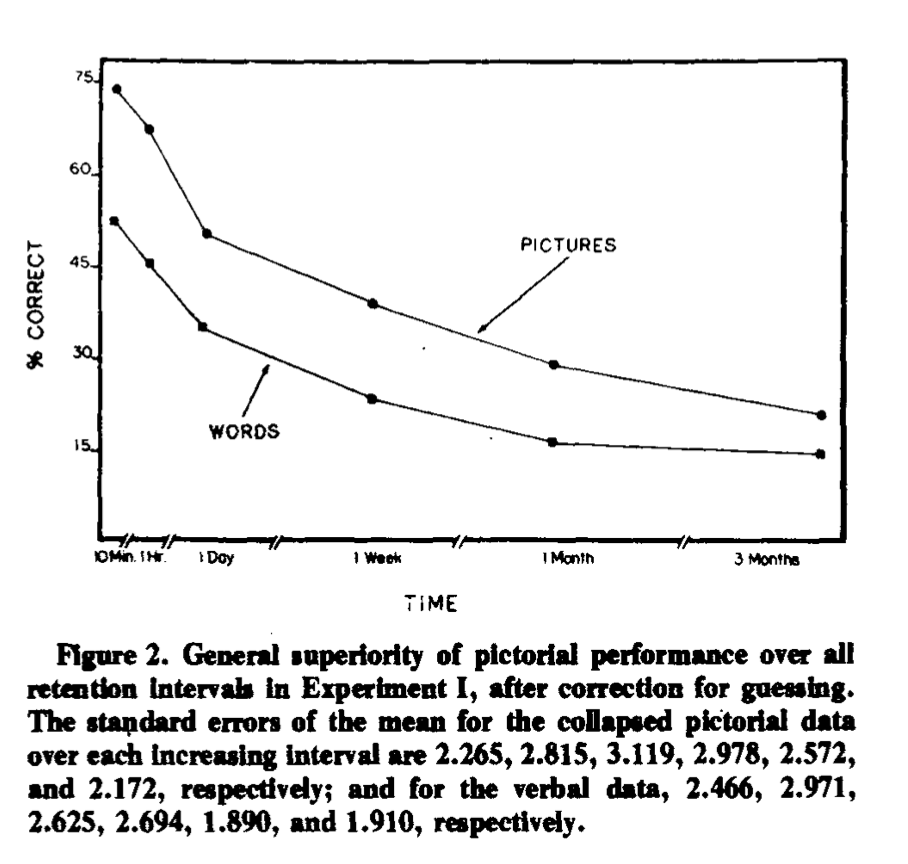
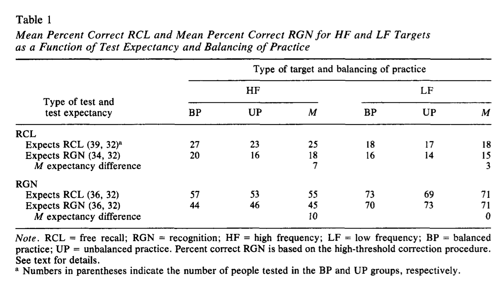
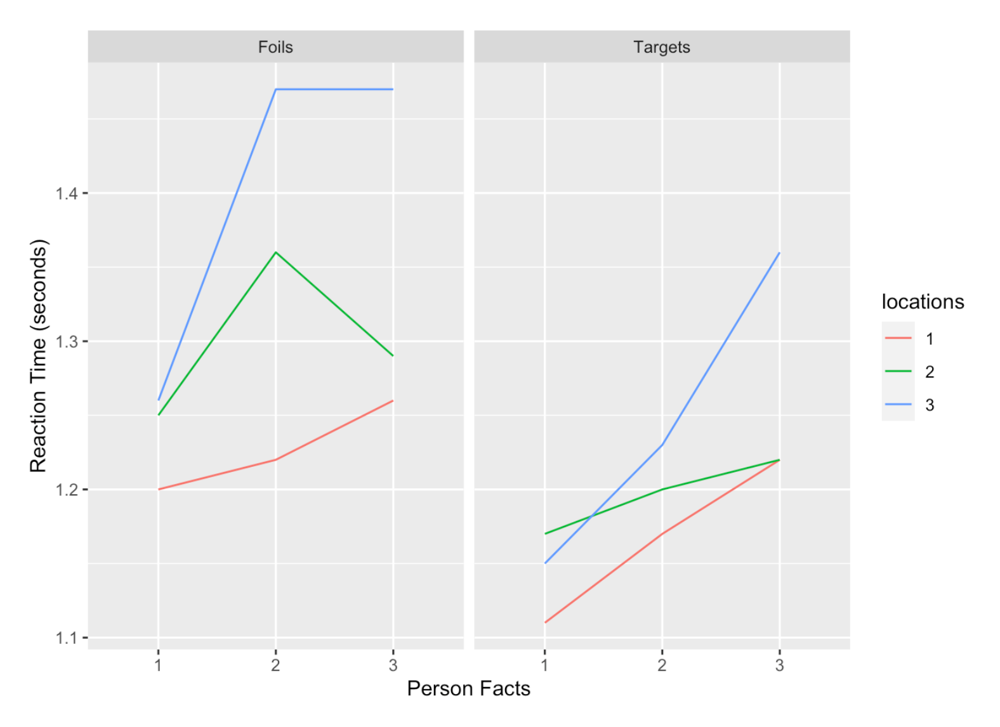
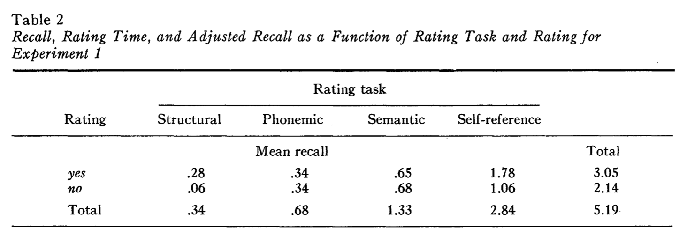

PSYC 2530: Memory II
Phenomena and principles
Matthew J. C. Crump
Last compiled 03/24/22
1. Measuring Memory
2. Memory Phenomena
3. Memory Principles
1. Measuring Memory
2. Memory Phenomena
3. Memory Principles
Picture Superiority effect


Frequency effects


Presentation Rate and Spacing
The encoding phase varied how long participants viewed each word, and used presentation rates of 1.3, 2.3, and 4.3 seconds.
Repetitions were separated, or spaced out, by 0, 2, 4, 8, 20, or 40 intervening words.

Melton, A. W. (1970). The situation with respect to the spacing of repetitions and memory. Journal of Verbal Learning and Verbal Behavior, 9(5), 596–606. https://doi.org/cpd74k
RI example
In a first phase (called original learning), subjects encoded 24 nonsense syllables and were then given a memory test. In a second phase (called interpolated learning), subjects in the experimental group were given 24 new nonsense syllables to remember, and subjects in a control group read the New Yorker magazine instead. In the final phase, everyone was retested for the items from the first list.

PI example from Underwood
Underwood, B. J. (1957). Interference and forgetting. Psychological Review, 64(1), 49–60. https://doi.org/c3vqj9

Fan effect example


Self-reference effect example


Bransford and Johnson
Participants read the previous paragraph under different conditions:
Full context

Full context

Results
Participants who got the full context picture BEFORE they read the paragraph, showed much higher comprehension and recall

Results

Results

1. Measuring Memory
2. Memory Phenomena
3. Memory Principles
Example
The results
Standard: better memory for semantic encoding than rhyming encoding
Rhyming test: better memory for rhyming encoding than semantic encoding